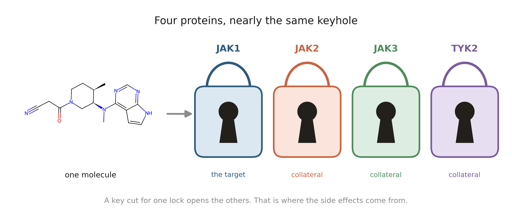
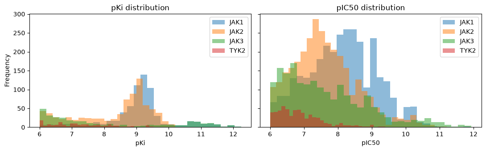
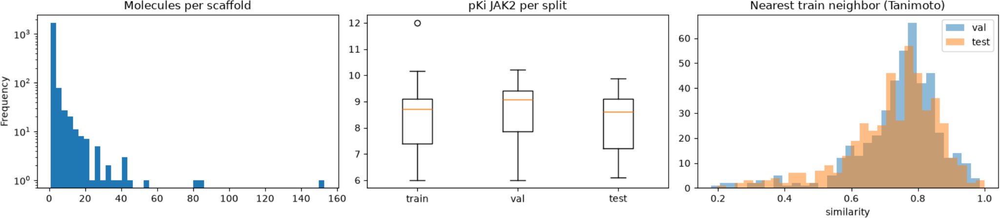
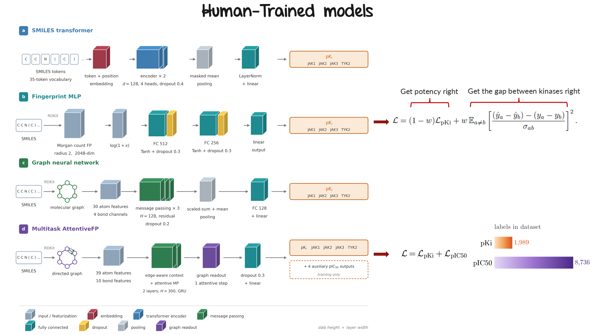
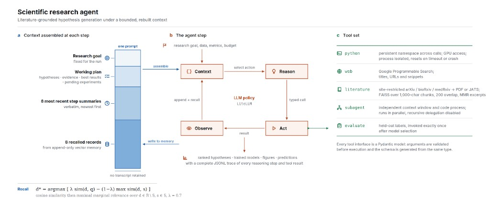
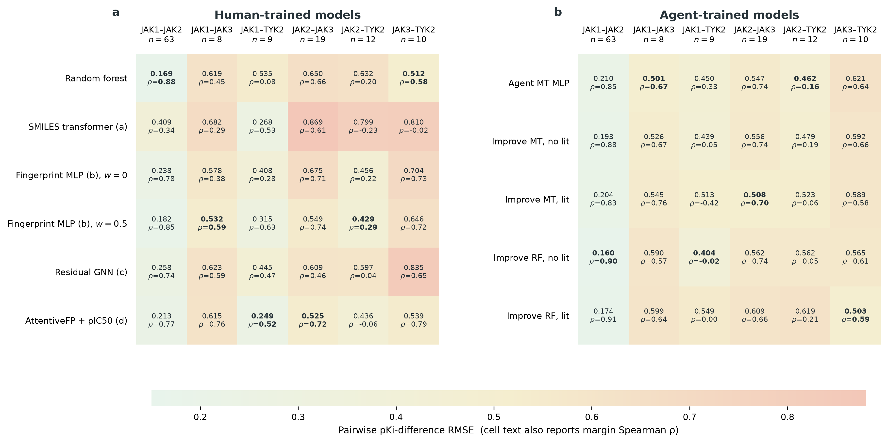
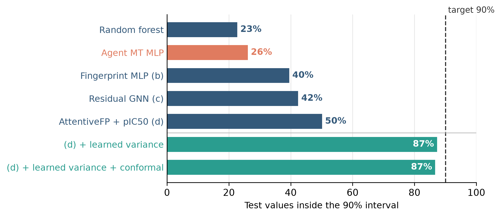

0.577 and Spearman 0.765, and two separate refinements also beat every human-trained model on both pKi metrics. Selectivity was a different story. A pairwise pKi-difference loss gave the best margin ranking at 0.638, while AttentiveFP gave the lowest pairwise RMSE at 0.429. The biggest repeatable improvement was using the much larger pIC50 dataset as a separate auxiliary task, not building a fancier architecture. The fold ensembles were also overconfident, and learning molecule-specific variance improved 90% interval coverage from 50.1% to 87.3%, with wider intervals as the tradeoff.
The problem
JAK inhibitors are important in autoimmune disease, but potency is only half the problem. The useful molecule has to bind the intended JAK without binding the others just as strongly. One pKi unit is a ten-fold difference in Ki, so selectivity lives in the gap between predictions rather than in either prediction alone. The four ATP pockets look like nearly identical keyholes, which makes that gap harder to learn than absolute affinity.
Affinity and selectivity were treated as separate goals from the beginning. Baselines and neural models were trained first. A research agent then received the same data, splits, evaluator, and compute budget, with the goal of finding something better.
A sparse dataset
The dataset has 10,725 measurements over 4,528 unique molecules. That sounds comfortable until the endpoints are separated. Only 1,989 measurements are pKi, while 8,736 are pIC50. Coverage is uneven across the family too. JAK2 has 804 pKi labels and TYK2 has only 163. The final test set contains 63 JAK1 labels, 84 JAK2 labels, 22 JAK3 labels, and 12 TYK2 labels. With only twelve TYK2 examples, a few molecules can noticeably move the macro score, so small model differences should not be treated as precise.

pKi distribution
pIC50 distribution
Each SMILES was standardized with RDKit by normalizing functional groups, keeping the largest fragment, reionizing, neutralizing when chemically reasonable, and writing canonical SMILES. Whole Bemis-Murcko scaffold groups were then assigned to 80% train, 10% validation, and 10% test, with no scaffold shared between splits. Pat Walters' post on splitting chemical datasets is an excellent introduction to why this matters.
The test labels were kept behind the evaluator and were read only after predictions had been saved. The validation and test molecules are also less similar to the training set than a random split would make them. That makes the score harder, but it is closer to the intended use case.

Molecules per scaffold
pKi JAK2 per split
Nearest train neighbor
pKi and pIC50 were kept as separate endpoints and were never converted into one another. Combining Ki and IC50 values from different assays adds substantial noise [3]. Related kinase work also finds that heterogeneous readouts are more useful when integrated in stages rather than pooled into one label [4]. There are too few molecules with both measurements here to learn a trustworthy conversion anyway.
Human-trained models
The comparison included a per-kinase random forest on Morgan fingerprints [6], a SMILES transformer, a fingerprint MLP, a residual message-passing GNN, a selectivity-aware MLP, and a multitask AttentiveFP graph network [1, 2]. Together they cover sequence models, fixed substructure counts, learned graphs, and attentive graph representations. Comparisons on other small molecular datasets have also found that descriptor and fingerprint models remain difficult to beat, while graph models benefit more consistently from larger or multitask data [7].

Figure 4 also shows how the training losses differ. The SMILES transformer, fingerprint MLP, and residual GNN use masked pKi mean-squared error. The selectivity-aware fingerprint model keeps that pKi term and adds a weighted loss on pairwise kinase differences. Multitask AttentiveFP instead uses \(\mathcal{L}_{\mathrm{pKi}} + \mathcal{L}_{\mathrm{pIC50}}\), with four separate pIC50 outputs and missing labels masked in both endpoint groups. The auxiliary heads add supervision without relabeling pIC50 as pKi.
Architecture was not the main lever. The random forest, fingerprint MLP, and GNN landed in roughly the same error range. The transformer performed worst, mostly because its JAK3 ranking collapsed. That is not too surprising for a sequence model trying to learn a representation from very few labels.
The clear improvement came from giving AttentiveFP four additional pIC50 output heads. The encoder could learn from all 8,736 pIC50 measurements while the two assay endpoints stayed separate. With the same encoder and split, macro pKi RMSE fell from 0.796 to 0.676 and pairwise RMSE fell from 0.504 to 0.429. More supervision helped more than a more complicated encoder.
Selectivity wants a different objective
Selectivity depends on the difference between kinases, so a pairwise margin term was added to the fingerprint MLP loss. The architecture and input stayed fixed, isolating the objective from the molecular representation. Directly modeling affinity differences has also helped selectivity prediction for other closely related protein targets [8].
\[\mathcal{L} = (1-w)\,\mathcal{L}_{\mathrm{pKi}} + w\,\mathbb{E}_{a \ne b}\!\left[\frac{(\hat{y}_a - \hat{y}_b) - (y_a - y_b)}{\sigma_{ab}}\right]^2.\]
The weight \(w\) trades absolute pKi supervision against between-kinase supervision. At \(w=1\), the absolute level is no longer identifiable because adding the same offset to every kinase prediction leaves all differences unchanged. A moderate value of \(w=0.5\) gave the best selectivity-margin ranking with Spearman 0.638, although absolute pKi became slightly worse. Multitask AttentiveFP had the lowest pairwise RMSE at 0.429. The best affinity model and the best selectivity model were not the same model, so the two scores were kept separate.
The research agent
The second half of the project introduced a ReAct-style research agent [5] with access to the same data and splits. It could update a persistent research plan, record hypotheses, run Python in an isolated process, delegate focused work to parallel subagents, search the web and literature, and call the label-isolated evaluator after choosing a model.

A growing transcript was not replayed. Summaries, tool outputs, literature excerpts, and results went into append-only vector memory. Before each decision, the prompt was rebuilt from the original goal, latest observation, working plan, eight recent step summaries, and eight recalled records. Cosine similarity found relevant records, then maximal marginal relevance kept near-duplicate code outputs from occupying every recall slot.
\[\mathrm{MMR} = \arg\max_{d_i \in R \setminus S}\left[\lambda\,\cos(d_i, q) - (1-\lambda)\max_{d_j \in S}\cos(d_i, d_j)\right].\]A value of \(\lambda = 0.7\) balanced relevance and diversity. Earlier versions let long code outputs displace the hypothesis list and literature evidence. The working plan and MMR recall fixed that failure without adding chemistry-specific rules. The literature workflow builds on Decode ELM, an earlier project for searching preprint servers, parsing full text, and answering questions with citations.
Did it beat the human-trained models?
On pKi, yes. The agent independently chose the larger pIC50 dataset as auxiliary supervision and built a multitask model in every discovery run. Five independent runs landed between 0.577 and 0.671 macro RMSE, all below the best hand-built result of 0.676. The strongest model was an eight-task MLP on Morgan features with macro RMSE 0.577 and Spearman 0.765. Two later refinements also beat every hand-built model on both pKi metrics.

pKi prediction error
pKi rank correlation
That win does not extend cleanly to selectivity. The agent was asked to minimize pKi error, and it never searched an objective built around the between-kinase gap. An agent model has the lowest pairwise error on four of the six kinase pairs, including the well-sampled JAK1-JAK2 pair. The human-designed objectives lead margin ranking on most pairs. Five of those pairs contain only 8 to 19 test molecules, so the pair-level differences are descriptive rather than definitive.

Where the agent hit a wall
The agent MLP and random-forest baseline were frozen, then each model was handed back with one instruction to make it better. Cross-validation error fell in all four runs. Rare-scaffold test error did not move beyond the 0.589 to 0.652 scatter between ordinary reruns. Some of the cross-validation improvement was optimistic because a blend weight or tree setting had been tuned on the same folds used for reporting.
The agent did not run out of hypotheses. It optimized the validation signal it was given, and ordinary GroupKFold did not reproduce the rare-scaffold shift in the fixed test. Literature grounding changed which experiments were tried and made their rationale easier to audit, but it did not improve out-of-scaffold accuracy. It did help catch one cross-kinase imputation experiment that leaked held-out labels into its features.
Calibration, honestly
Fold disagreement was not a calibrated uncertainty interval. A nominal 90% interval covered only 26.1% of measured pKi values for the best agent model. The same problem appeared in the hand-built ensembles. AttentiveFP with auxiliary pIC50 reached only 50.1% coverage. Broader molecular uncertainty benchmarks also find that ensemble methods do not rank errors reliably across every dataset [9].
AttentiveFP was retrained to predict a molecule-specific variance, which was combined with seed and fold disagreement. Coverage rose to 87.3%, and an out-of-fold conformal check changed it very little. Better coverage came with wider intervals of about 2.2 pKi units and worse point RMSE of 0.799. The original model remains the point predictor, while fold spread is treated as a relative warning signal rather than a prediction interval.
